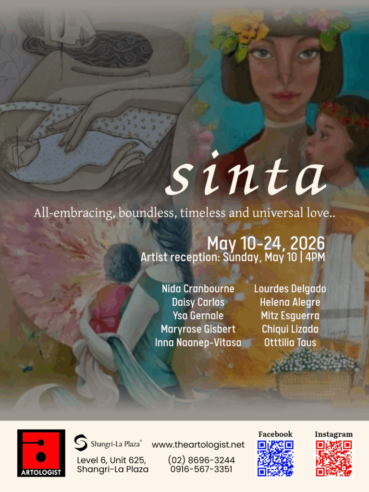
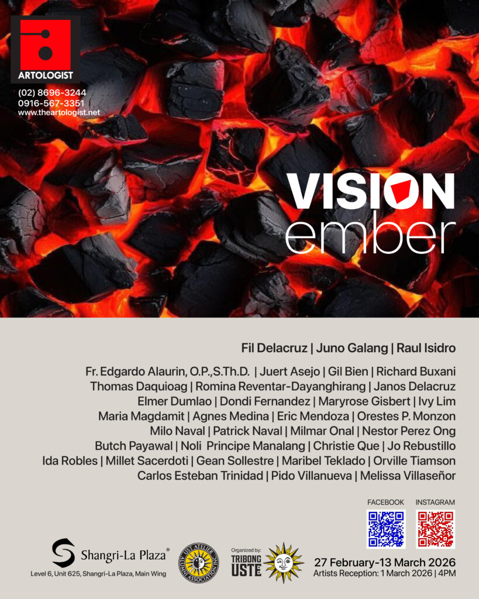
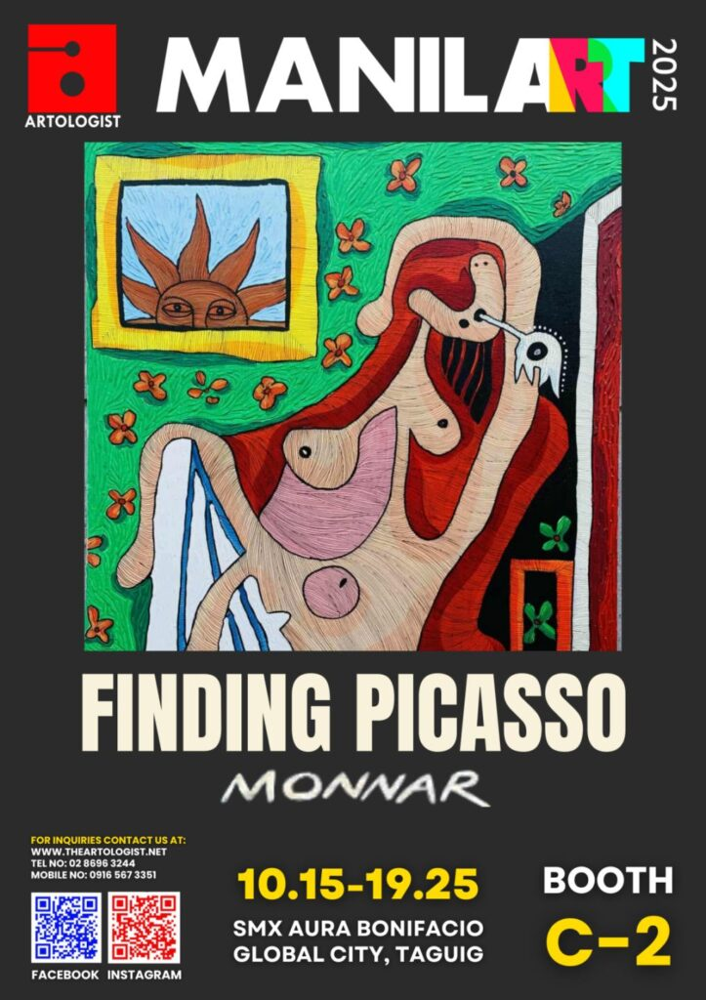
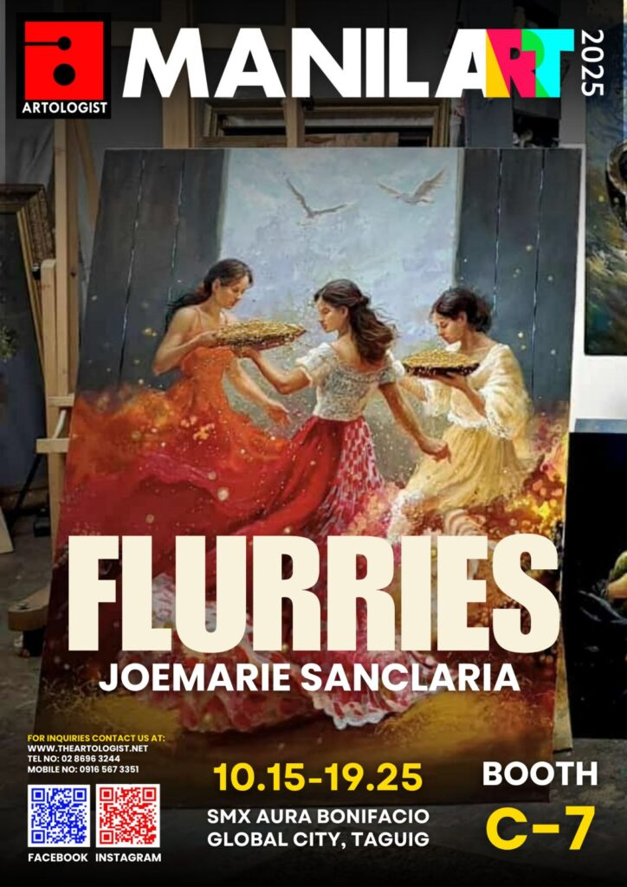
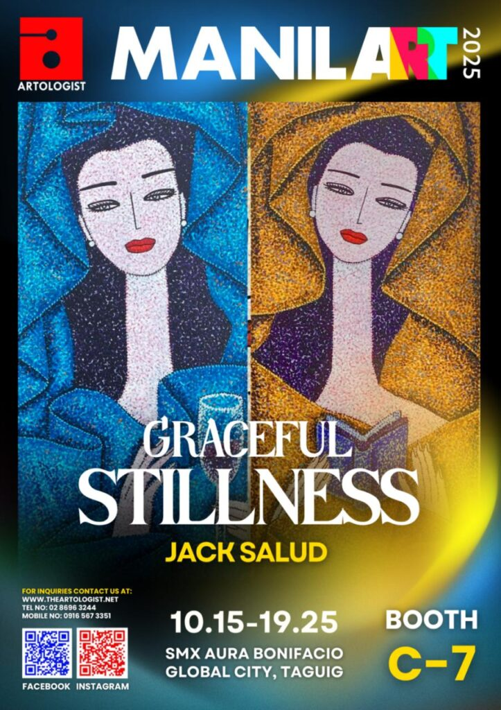
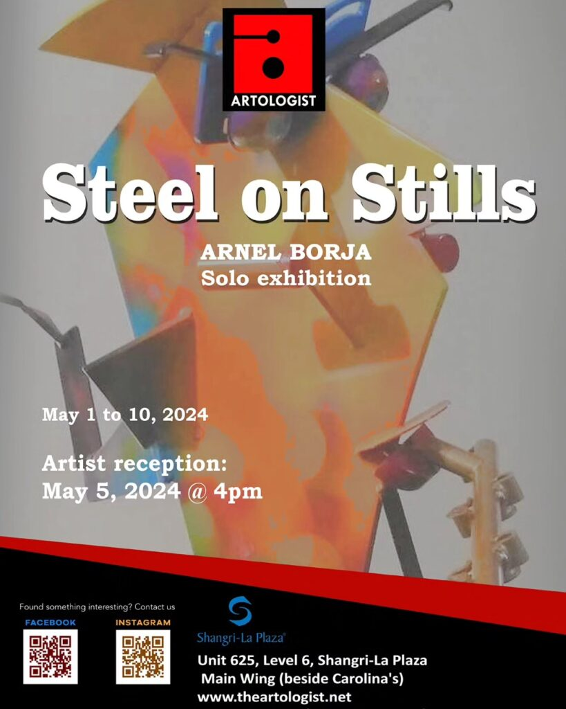

Shangri-La Mall
The Art Plaza.
Level 4, Shangri-La Plaza Main Wing
EDSA, Mandaluyong
- Tel8696-3244
- Cel0945-511-2568
Home of the young, emerging and mid-career contemporary Filipino artists — across four galleries, one workshop floor, and a quarterly magazine.

A place of discovery, of development through art.— The Artologist, since the first room on Eisenhower St.
A working curatorial slate — two-women shows, mid-career retrospectives, group surveys. Every opening paired with a printed catalogue and a Quarterly feature.





A curatorial flagship in Mandaluyong, a learning HQ in Greenhills, a mall-front in Manila Bay, and a US bridge in California.
Level 4, Shangri-La Plaza Main Wing
EDSA, Mandaluyong
#81 Xavier St., Unit 203
Greenhills, San Juan City
Filipino Village · Unit 2162-16
Second Floor, Ayala Malls Manila Bay
#920 E Santa Ana Blvd
Santa Ana, CA 92701
Eight curriculum tracks for ages 5 and up, taught by Artologist gallery artists. Studios in Greenhills and Manila Bay.
Foundations to intermediate — graphite, charcoal, ink.
Reserve →Colour theory, washes and brushwork.
Reserve →Landscapes, florals, seascapes, still-life, portraiture.
Reserve →Classical to contemporary techniques.
Reserve →Glaze and decorate bisque-fired functional pieces.
Reserve →Wearable art — totes and pouches.
Reserve →Mixed-media — ceramics, wood, acrylic, canvas.
Reserve →Mix and match across any workshop. The best entry point — and the most-booked.
Reserve seat →Our signature programme. Hand-painted handbags, canvases and ceramics commissioned from our gallery roster. One subject. One artist. One piece.
Four issues a year. Long-form interviews, studio visits and exhibition essays from our curators. Printed in Manila, shipped to subscribers in PH and the US.
Subscribe ↗Walk-ins welcome at every location. Workshops by reservation. Collectors — DM the gallery for an early preview of any opening.